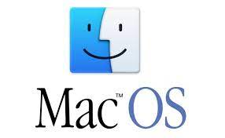

MacOS, ¿El sistema operativo 2022?
MacOS X es uno de los sistemas operativos principales en el mercado de OS, debido entre otros, a su alta seguridad y su buena publicidad, pero, ¿De verdad es tu mejor opción? Vamos a ver sus carácteristicas y ver también algunos inconvenientes que posee.
Características técnicas
Desarrollador: Apple, Inc.
Núcleo: Híbrido (XNU)
Programado en: C, C++, Objective-C y Swift
Plataformas admitidas: ARM64 (11 - actual), x86-64 (10.4.7 - actual), IA-32 (10.4.4 - 10.6.8), PowerPC (10.0 - 10.5.8)
Licencia: licencia de software privativo
Ventajas e inconvenientes con respecto a otros OS
Muy seguro: Esto puede interpretarse como algo bueno o como algo malo, me explico. Por un lado, al poseer tantas capas de seguridad y actualizarlas al mínimo fallo, reduce mucho el riesgo de sufrir ataques hackers, pero también conlleva hacer determinados procesos y algunas acciones muy tediosas debido a las alta seguridad.
Diseño muy cuidado: Por todos es conocido el nivel de diseño y detalle que Apple dedica a sus equipos.
Software y hardware dedicado: Los equipos Apple trabajan con un sistema operativo exclusivo para estos equipos y lo mismo sucede con el hardware. Esto provoca que el sistema operativo optimice el funcionamiento del equipo, convirtiéndolos en equipos muy estables y que sacan el máximo provecho de su hardware. Además, Apple lanza constantemente actualizaciones de su sistema operativo de forma gratuita que optimizará todavía más tu equipo, por muy antiguo que sea.
Equipos no ampliables: Una vez compras un Mac, al menos en los equipos más actuales, no podrás modificarlo. En el momento de la compra tendrás que decidir el procesador que deseas, la memoria RAM y el almacenamiento del disco. Si tus necesidades varían a lo largo del tiempo, tendrás que cambiar de equipo ya que no podrás ampliarlo más adelante.
Deficientes gráficos: Aunque esto no repercute en la mayoría de los usuarios, es cierto que MacOS, al igual que Linux, cuenta con unas cualidades gráficas y de resolución que dejan bastante que desear con respecto a su principal competidor, Windows.
Precio por las nubes: Como supongo ya sabes, MacOS no es opensource y necesita unos equipos específicos Apple para funcionar, que no son especialmente baratos, y es que la media ronda los 1500-1700€.

Conclusión
Debido a las características de MacOS, este es un sistema operativo muy recomendable para personas con un presupuesto más bien alto, cuyo fin no sea utilizarlo para propósitos gráficos (como videojuegos o editión de vídeos o fotos) y a quien le preocupe el acabado y belleza del ordenador.
Lo que debes saber antes de decidirte por MacOS X
MacOS no destaca especialmente por lo intuitiva que es su interfaz gráfica, por tanto, es recomendable tener algunos conceptos básicos claros antes de tomar la decisión. Para ello, te dejamos aquí un vídeo con todo lo que necesitas saber para empezar.